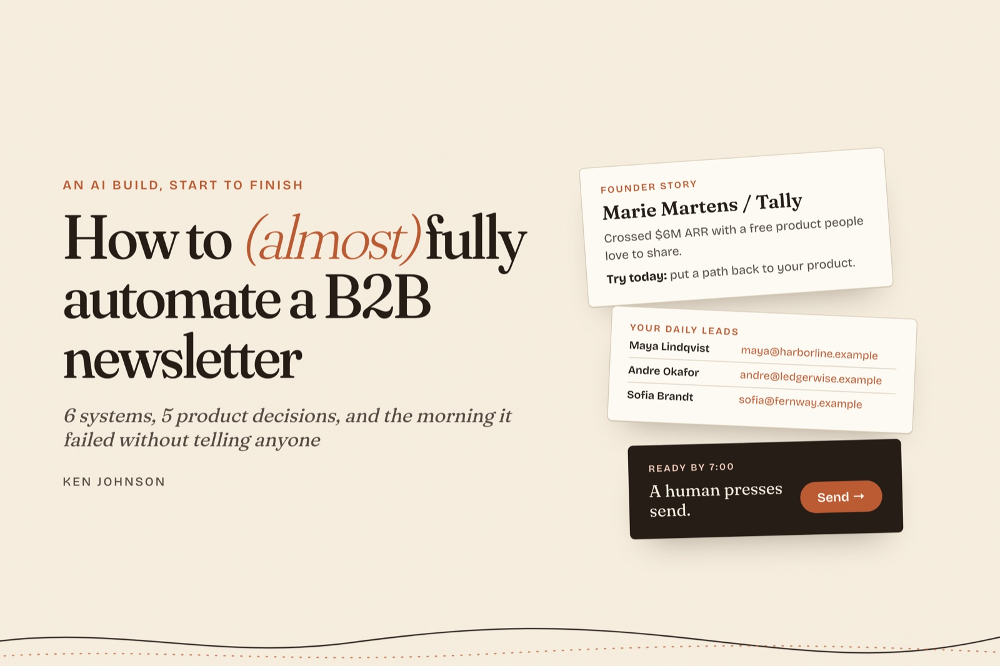
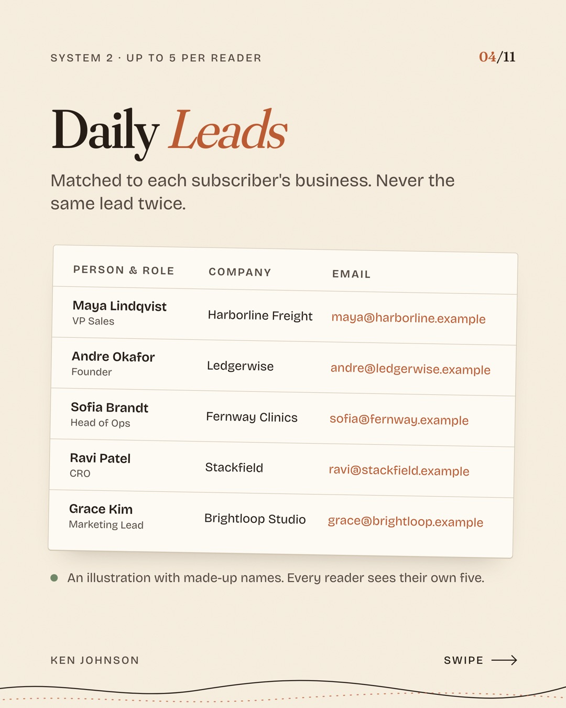
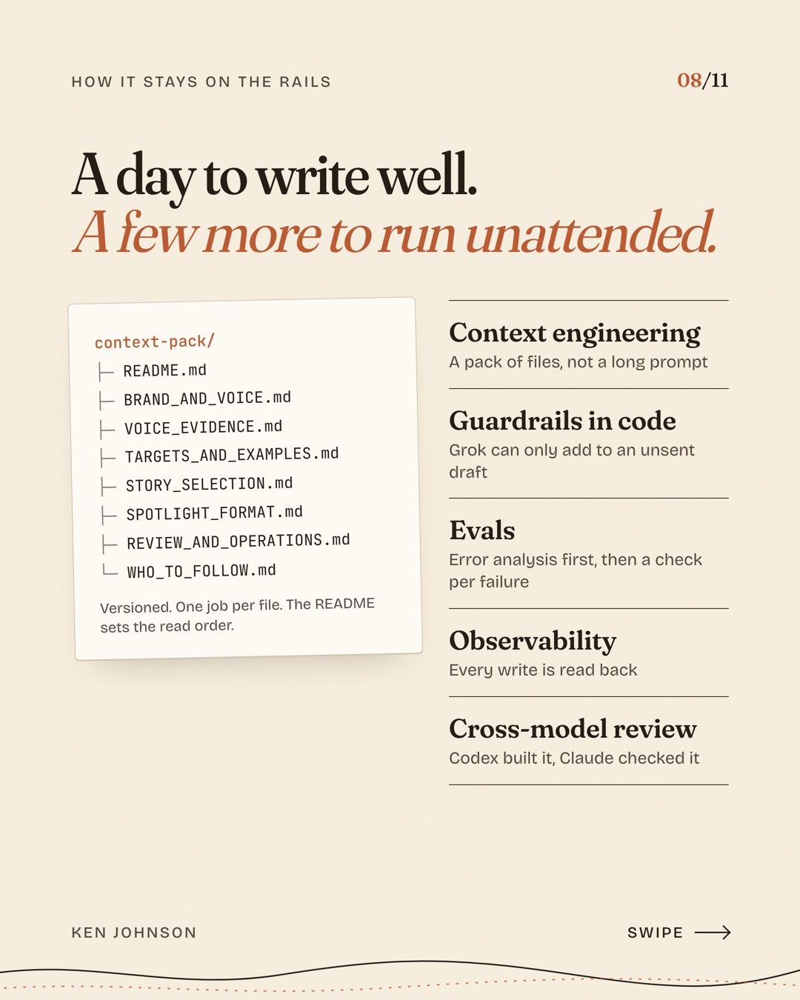
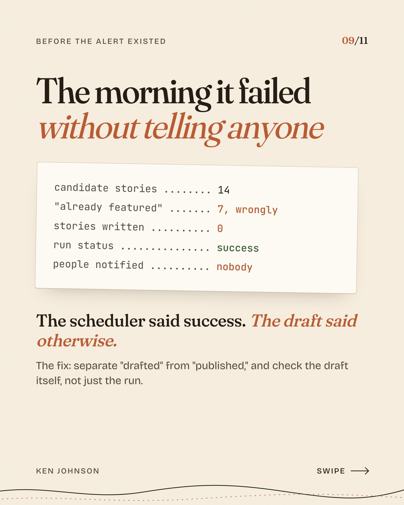

6 systems, 5 product decisions, and the morning it failed without telling anyone
By Ken Johnson

My client had 18,000 newsletter subscribers they hadn't emailed in a while.
That's a big list to leave quiet. They wanted a daily email that would do two jobs: wake the list back up, and turn readers into users of their product, a B2B lead generation tool.
The bet was simple. Useful stories every morning give people a reason to open. Personalized leads give them a reason to sign up.
I built it for them with Codex, Claude, and Grok Bot. Today it runs almost entirely on autopilot: a finished draft lands in beehiiv every morning, and one person reads it and presses send.
This post covers what's in the email, the five product decisions that shaped it, how I keep it on the rails, and the morning it failed anyway.
What lands in the inbox
Six systems put each issue together:
Founder Stories. Grok Bot scans X for the latest wins from founders and indie hackers, starting with posts my client bookmarks. Each story is broken into three quick parts: what they did, how they got customers, and what you can try today. Think Hacker News or Indie Hackers, summarized and in your inbox.
Who to Follow. One builder with under 10,000 followers who builds in public. We never print the follower count. It's how we choose people, and saying it could read as belittling.
Daily Leads. Subscribers who share their business website get up to five leads matched to their business. No subscriber gets the same lead twice.
Signup Capture. Subscribers without a website get a prompt to add one.
Morning Draft. A dated draft is ready in beehiiv by 7am with the stories and leads already in it.
Human in the Loop. My client reviews, edits, and sends.

An illustration with made-up names. Every reader sees their own five.
Five product decisions, and what each one cost
1. I said no to the shiny algorithm
The product already matched leads to a business for its reports. On day one, I pointed out that we could already generate custom reports automatically. We just needed the leads inside the daily newsletter. So the newsletter reuses the existing matcher and its filters. I rejected adding a new matching algorithm. The cost: the newsletter's leads are only as good as the reports. The win: one source of truth, and a much smaller build.
2. AI never gets the send button
The system never schedules or sends anything. It prepares the draft, and my client sends it. AI puts the pieces together. My client is the judgment and verification layer. A draft can be fixed. A sent email can't. The cost: it's not fully hands-off. I'm fine with that.
3. The leads we burn on purpose
Once a send might have happened, those leads are marked used for that subscriber, even if we can't confirm delivery. Some leads get thrown away. Nobody gets the same lead twice. For a product that sells fresh leads, a repeat costs more than a skipped one.
4. Make them click twice
The list uses double opt-in, and I kept it. A confirmed email is a better signal that someone actually wants their leads, and it filters out tire kickers and spam signups. Every confirmed signup starts a lead report, so I want that signal before we do the work. It's safety insurance. The cost: some real people never confirm.
5. Less is more
Grok writes two or three stories when the evidence is there, and fewer when it isn't. A story needs a concrete milestone and a real account of how they got customers. A revenue screenshot with no "how" doesn't make the cut. The cost: some mornings the section runs shorter. Two strong stories beat three weak ones.
How it stays on the rails
Getting Grok to write a good story took a day. Getting it to do that every morning, without me checking, took a few more days. Most of that time went into these five things.
Context engineering. Grok runs on a versioned context pack that lives on its own computer, not on a long prompt. It's a set of markdown files, each with one job: brand and voice, my client's real X posts as voice examples, target profiles and example stories, the rules for which stories qualify, the exact email format, and how to review, report, and run the daily routine. A README tells Grok which files to read and in what order.
Guardrails in code. The prompt describes the rules, and the code enforces them. Grok's editor can only add content to an unsent draft. It can't send, schedule, change the audience, or touch the leads.
Evals. I started with error analysis: reading real drafts, marking each one pass or fail, and naming what went wrong. Each failure became a check. Objective ones run in code on every draft: formatting, banned punctuation, and whether the copy is new or recycled. Failures we've hit, including the one below, are now regression tests. Subjective calls, like tone and whether a story is worth telling, stay with a person: my client reviews every issue before it goes out.
Observability. After every write, the system reads the draft back and checks the stories, the leads, and the audience. A finished run and a correct draft are tracked as separate signals, and since the failure below, a run that comes back empty sends one alert.
Cross-model review. Codex wrote most of the code. Claude reviewed it. I had each one check the other's work, and more than once one caught the other assuming something it hadn't verified.

The morning it failed without telling anyone
Even with those rails, it broke once. One morning, I opened beehiiv and found two drafts, one for that day and one for the next. Both had their leads. Neither had a single story.
My first guess was that Grok Bot hadn't run. My desktop app had been asking for an update.
It had run. That morning, Grok looked at 14 candidate stories and rejected all of them. Seven failed on evidence or fit. The other seven were marked "already featured." They hadn't been. They were sitting in unsent drafts from the two days before, and the bot treated "in a draft" as "published." The run ended, the scheduler called it a success, and nobody was notified, because the draft hadn't changed.

I didn't want a one-time fix. I wanted a system that couldn't fail that way again. The fix separates "drafted" from "published," carries good stories forward from unsent issues, and checks the draft itself instead of trusting that the run finished.
What we measure
We're three weeks in, so the first real numbers come next month. These are the three we'll judge it by, one for each job the email has to do.
Reactivation rate. The share of quiet subscribers who open or click in their first few issues. The first job is waking the list up. If they don't open, nothing else matters.
Website adds. The share of readers who add their business website. That's the moment the email becomes theirs, with leads matched to their business. It's our activation milestone: the first moment the product shows its value.
Signups. Free accounts created from the newsletter. The second job is turning readers into users, and this is the number the business cares about.
We also watch unsubscribes and spam complaints. A daily email that grows signups while it burns the list isn't a win. Those are our guardrail metrics.
AI builds the draft. My client sends it.
If you're a founder with a quiet list, or an AI workflow you want built with a product lens, message me on LinkedIn.